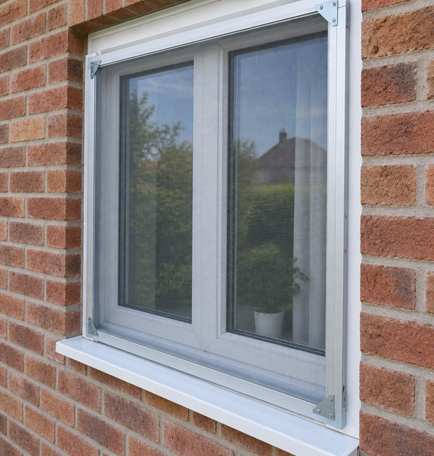

Рамная
Классика на крючках, самая доступная
Алюминиевая рамка с натянутым полотном ставится на окно снаружи и держится на крючках или уголках. Простая, лёгкая, снимается одной рукой.
- Плюс: минимальная цена, ремонтопригодна, подходит на любое окно
- Плюс: можно снять на зиму и помыть в ванне
- Минус: чтобы открыть створку, сетку нужно снять
Берут на кухни, в спальни, на дачи: там, где окно открывают нечасто.